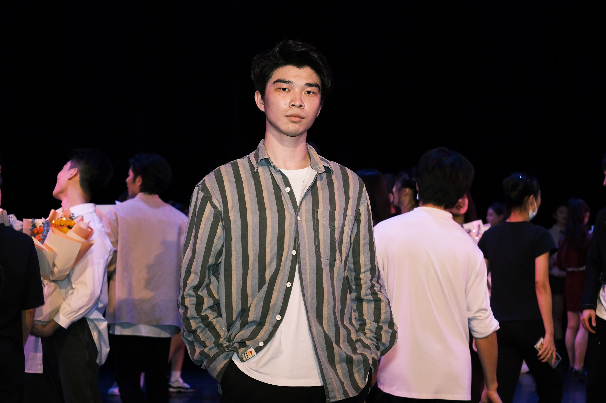

01 · 知识型 IP
零粉冷起号10w粉
家庭智慧看少文 · 博商矩阵号
从0运营家庭教育矩阵单账号，单月涨粉10万；提出亲子沟通系列选题，负责访谈拍摄与剪辑发布。
10 万粉2024 年 10 月涨粉
同期后台：429.68 万播放 · 14.01 万分享
账号主页与增长数据

SELECTED WORK
从选题判断，到真实成片
01 · 知识型 IP
家庭智慧看少文 · 博商矩阵号
从0运营家庭教育矩阵单账号，单月涨粉10万；提出亲子沟通系列选题，负责访谈拍摄与剪辑发布。
同期后台：429.68 万播放 · 14.01 万分享
03 · AI 辅助呈现
用AI制作可旋转、缩放与拆解的产品3D网页，拆分10个部件了解结构，可用于各类产品讲解与售前演示。
职业履历 · 从近到早
内容策划与制作
短视频编导 · Allin 拆片分享与内容制作
学习工具账号与 Allin 拆片会短视频运营 · 短视频策划、拍摄与账号运营
新媒体运营 · 知识付费 IP 矩阵起号与运营
「零粉冷起号10w粉」账号与数据舞蹈与音乐教育 · 本科 · 专业学习与早期实践
演出现场与演职证明从0运营矩阵单账号，单月涨粉10万；提出亲子沟通系列，推动选题通过并落地拍摄。
看选题与账号结果 ↗摄影系列多条作品破百万，单条最高300万＋播放；从爆款拆解、文案创作、拍摄与出镜状态调整，到后期剪辑、发布运营，全流程独立完成。
看摄影系列成片 ↗将爆款叙事转化为可复用AI提示词，用于系列脚本创作；本人改稿、实拍验证多条百万播放作品，单条最高300万＋，并转化为教学分享案例。
看提示词、成片与播放记录 ↗1150528414@qq.com
打开打印窗口后，可选择“另存为 PDF”。
短视频编导
网页作品集 · wujiahui0801-cmd.github.io ｜ 1150528414@qq.com
短视频编导，负责选题策划、访谈拍摄与剪辑发布。所运营知识付费矩阵单账号2024年10月涨粉10万；制作的官方账号内容单条522.2万播放。提炼可复用AI提示词并用于个人摄影系列创作，代表作308.9万、131.6万播放；Allin拆片会内部评审连续七期第一。
短视频编导 · Allin 拆片分享与内容制作
短视频运营 · 短视频策划、拍摄与账号运营
新媒体运营 · 知识付费 IP 矩阵起号与运营
舞蹈与音乐教育 · 本科 · 专业学习与早期实践
提炼可复用AI提示词并用于摄影系列脚本创作，结合本人选题、改稿与拍摄，两条代表作获得308.9万、131.6万播放；将实战过程用于教学分享。
系列代表作分别为308.9万、131.6万播放（截图时点）；另有置顶人设视频十余万播放，带来50＋咨询线索。 广告合作报价 1,800 元，实收 1,710 元。
用AI制作的本机内容生产工具，串联抖音、小红书、视频号的素材采集、口播转写与成稿导出。把逐条找视频、另行听写、手动整理来源的工作，转为批量选片、后台处理与统一导出。
用AI制作富士X-S10产品交互3D网页，支持10个部件点选、旋转缩放、整体拆解与还原，让客户可以主动探索产品外观、结构与部件关系。
系列选题与策划 · 访谈拍摄与成片 · AI提示词与系列创作
吴嘉辉 · 涌明 ｜ 2026.11 ｜ 项目按本人实际参与职责呈现。